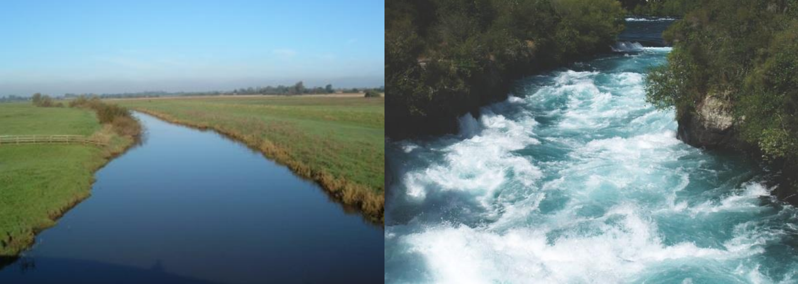
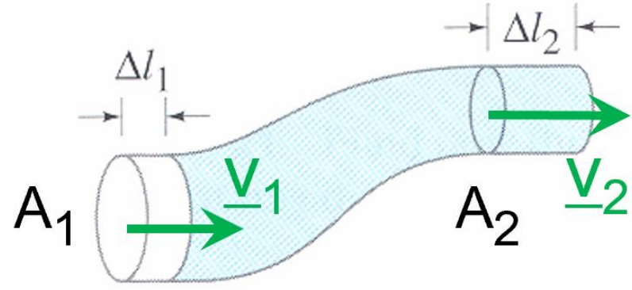
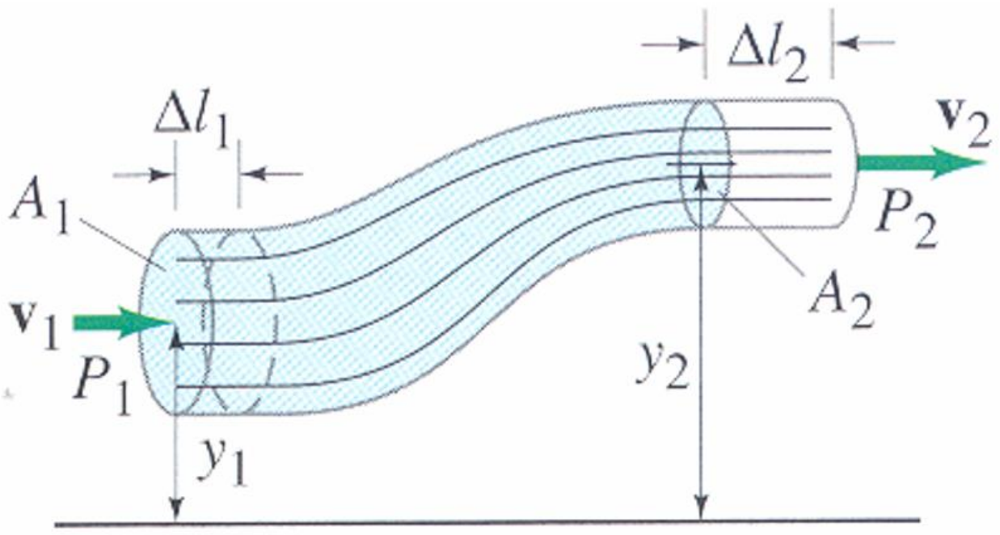
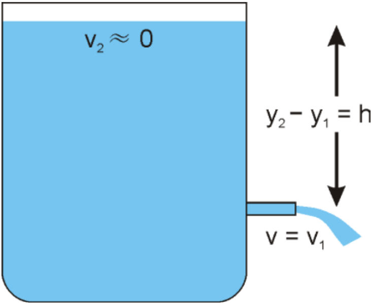
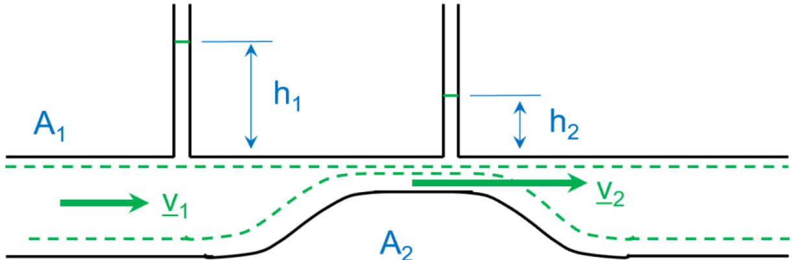

Fluids & the Bernoulli effect
Contents
Fluids & the Bernoulli effect#
Pressure#
Pressure is a positive scalar quantity; it has dimensions of force per unit area. The units of pressure are classically psi, Pa, atm and bar. The atmospheric pressure is \(~1\) bar = \(10^{5}\) Pa. In a static fluid:
the pressure is the same over any horizontal surface;
the force due to the fluid pressure is perpendicular to any surface with which the fluid is in contact;
within the body of the fluid, the force due to fluid pressure is the same in all directions (isotropy).
In a fluid with constant density \(\rho\), the pressure at depth h below the surface is:
where \(P_{0}\) is the pressure at the surface. In many problems, \(P_{0}\) is small compared to the depth of interest and can be disregarded. The pressure is function of the weight of the fluid column and not of the extent of the fluid reservoir.
Fluid flow#
The fluid flow is usually described by considering the movement of fluid particles through a fixed window of observation – this is the so-called Eulerian description. Steady state flows are characterised by a time-independent velocity everywhere in the observation window. In that instance, streamlines or pathlines are identical to trajectories of the material particles.
In general, we can distinguish two types of fluid flow:
Smooth flow, such that neighbouring layers of the fluid slide past each other smoothly. This is laminar flow. The picture below on the left, of the River Derwent, Yorkshire, provides a typical example. The river flow is said to be steady.
Turbulent flow, in contrast to laminar flow, is characterised by erratic, small whirlpoollike flow, often in circles or eddies as illustrated below in the picture on the right.

A stream-tube is a collection of neighbouring streamlines. For incompressible fluid, by conservation of mass, the area of a cross-section of the stream-tube times the average velocity is constant.

To understand this result, consider the fluid at point 1 occupying the volume \(A_{1}\Delta l_{1}\) which will flow to point 2 of section \(A_{2}\) and occupy the volume \(A_{2}\Delta l_{2}\). Since the fluid does not change its density, the mass of fluid m in the two volumes and thus the two volumes, \(A_{1}\Delta l_{1}\) and \(A_{2}\Delta l_{2}\), must be equal. Equivalently, if the velocities at points 1 and 2 are \(v_{1}\) and \(v_{2}\) , the distance \(\Delta l_{1}\) and \(\Delta l_{2}\) have been crossed during the same time increment. Consequently, incompressibility also implies that \(A_{1}v_{1}\) is equal to \(A_{2}v_{2}\).
Bernoulli’s equation#
Bernoulli’s equation applies to fluids that are undergoing laminar flow, and that have a constant density, constant temperature and zero viscosity – that is, to inviscid, incompressible, and isothermal flow.
Three types of energy need to be considered to obtain Bernouilli’s equation:
kinetic energy associated with the movement of the fluid \(\left(\frac{1}{2}mv^{2}\right)\)
gravitational potential energy associated with changes in height (\(\rho gh\))
work done by pressure forces (\(\text{force} × \text{distance moved}\))
Consider the balance of energy when a fluid moves from section 1 to section 2.

The work done, \(W_{1}\), to push the fluid into the region at point 1 is the force times the distance moved, \(W_{1} = P_{1} A_{1} \Delta l_{1}\).
And the work done \(W_{2}\) by the fluid as it pushes out of the region at point 2 is similarly given by \(W_{2} = P_{2} A_{2} \Delta l_{2}\).
Now, if we balance the work done and the kinetic and potential energy, we get:
Dividing through by the volume gives Bernoulli equation:
The pressure term, for example \(P_{1}\), is called the static pressure. The contribution of the kinetic energy, for example \(\frac{1}{2}\rho v_{1}^{2}\), is called the dynamic pressure. The last term is the hydrostatic pressure.
Special cases#
If the fluid is static, then Bernoulli’s equation reduces to the expression for pressure in a static fluid.
\[P=P_{0}+\rho gh\]where \(h = y_{2} - y_{1}\)
If, as will often be the case, there is no change in height involved, then Bernoulli’s equation becomes:
\[P_{1} + \frac{1}{2}\rho v_{1}^{2} = P_{2} + \frac{1}{2}\rho v_{2}^{2}\]This simplified equation can be summarised by the following interpretation which is used in many problems: “where the flow velocity is high, the pressure will be low, and where the velocity is low, the pressure will be high.”
If one of the velocities is zero, and if the pressure difference is just due to the height difference in the fluid, then Bernoulli’s equation reduces to:
\[v = \sqrt{2gh}\]These conditions apply to flow through a small exit from a large chamber where both the exit and the top of the chamber are at the same external pressure.

Note that the velocity at which the fluid exits the chamber is the same velocity as that of an object falling under gravity from the top of the chamber.
Applications#
Bernoulli’s equation has lots of consequences and applications. It describes the process that enables yachts to sail into the wind, aeroplanes to fly, free kicks to bend into goal, and perfume sprays to work. It also describes the process by which sediments are lifted from a river-bed by a current, and dust is lifted into the air by powerful winds. Two of these applications are described below.

The figure above is a schematic representation of the Venturi effect which is a can be described by applying the Bernouilli equation to a constriction in a tube (see diagram above). The manometer to the left, with the column height \(h_1\), measures the static pressure in section 1 (given by \(p_{1} = \rho gh_{1}\). The tube to the right, in the constriction (section 2), also measures the static pressure (given by \(p_{2} = \rho gh_{2}\)) . Since the potential energy is negligible in this problem, Bernouilli’s equation becomes:
having divided by the fluid density and replaced the static pressure by the manometer measurements. Furthermore, mass conservation implies that \(v_{1}A_{1}=v_{2}A_{2}\). Combining this result with the equation above we obtain:
The measurements of the difference in height by the manometer thus provide information on the flow velocity.
Particles on the bed of a flowing river, or on the bottom of a lake or ocean where there are water currents, can move by several mechanisms. These include rolling along the bottom and being lifted into the flow by the Bernoulli effect.
When a particle of sediment sits on a river-bed or the sea floor in a current, the fluid will flow over the particle above it but not below it. The Bernoulli effect will produce a lower pressure above the particle which will tend to lift it from the river-bed. If the lift is greater than the weight minus the buoyancy of the particle, then it will rise into the flow.
To calculate the flow that is required to just lift a particle, balance the net gravitational force (the weight minus the buoyancy) against the net pressure forces (the Bernoulli pressure multiplied by the cross-sectional area of the particle).
For a spherical particle of radius \(r\) and density \(\rho_{s}\), in a fluid flowing at a velocity of \(v\) with a density of \(\rho_{f}\), the two forces are:
When these two are equal, then the particle will be on the verge of rising into the flow.
# import relevant modules
%matplotlib inline
import numpy as np
import matplotlib.pyplot as plt
# create our own functions
def mm_to_m(distance):
return distance/1000
Question 3#
If you blow across the top of a pile of sugar grains, the Bernoulli effect lifts the sugar off the pile. Approximately how fast do you need to blow? You will need to estimate the density of sugar and the dimensions of a sugar grain to do this.
A sugar grain is maybe \(1\,mm\) diameter. It’s density is about \(1000\,kg\,m^{-3}\) (similar to water).
The density of air is about \(1.3\,kg\,m^{-3}\).
The downward force on a grain is just its weight \(mg \sim 10^{-9} × 1000 × 10 = 10^{-5}\,N\)
The upward force = \(PA\) where \(P = \frac{1}{2}\rho v^{2}\), and \(A \sim 10^{-6}\,m^{2}\).
For the sugar to lift off, the upward force must be larger than the downward force.
Putting this together gives \(v = \sqrt{\frac{2mg}{\rho A}}\), so \(v \sim \sqrt{\frac{2 × 10^{-5}}{1.3 × 10^{-6}}} \sim 4\,m\,s^{-1}\).
Note that this isn’t really a question about sugar – it’s a problem about Aeolian transport of sediment where the same principles apply.
Question 4#
A silt particle, a sand grain, a small pebble and a large cobble each sits on a river bed. Approximately how fast must the river flow over each of these to lift the object from the river bed?
As in Q3, you will need to estimate density and dimensions to do this. Getting an accurate answer is not important; getting an idea of the speed of flow for different grain sizes is.
This process is similar to that in question 3. The main differences are:
the density is that of water not air,
the weight of the particle needs to be replaced by its weight minus its buoyancy,
the area in the force calculation is the area obtained if the particle is projected vertically onto a horizontal plane – i.e. for a spherical particle, the area is that of a circle of the same radius (since it is only the vertical component of the pressure force that gives lift).
So balance the gravitational force minus the buoyancy against the lift due to the flow.
$\(\text{lift} = \text{pressure} × \text{area} = \frac{1}{2} \rho_{w} v^{2} × \pi r^{2}\)$.
Set these equal and solve for \(v\) with \(\rho \approx 2800\,kg\,m^{-3}\), \(\rho_{w} = 1000\,kg\,m^{-3}\), \(g \approx 10\,m\,s^{-2}\)
# plot the relation between the diameter of a particle (d = 2r) and the minimum current velocity (v_min) able to lift the particle.
def v_min(d, particle_density=2800, water_density=1000):
g = 10
r = d/2
return (r*(8/3)*g*(particle_density-water_density)/water_density)**0.5
# According to Wentworth's scale
# silt = 1/16 - 1/256 mm
# sand = 2 - 1/16 mm
# granule = 2 - 4 mm
# pebble = 4 - 64 mm
# cobble = 64-256 mm
d_silt = np.linspace(mm_to_m(1/256),mm_to_m(1/16),10)
d_sand = np.linspace(mm_to_m(1/16),mm_to_m(2),10)
d_granule = np.linspace(mm_to_m(2),mm_to_m(4),10)
d_pebble = np.linspace(mm_to_m(4),mm_to_m(64),100)
d_cobble = np.linspace(mm_to_m(64),mm_to_m(256),100)
plt.figure(figsize=(8,6))
plt.plot(d_silt, v_min(d_silt), 'k', label='silt')
plt.plot(d_sand, v_min(d_sand), 'y', label='sand')
plt.plot(d_granule, v_min(d_granule), 'b', label='granule')
plt.plot(d_pebble, v_min(d_pebble), 'g', label='pebble')
plt.plot(d_cobble, v_min(d_cobble), 'r', label='cobble')
plt.xlabel('d (m)')
plt.ylabel('$v_{min}\,(m/s)$')
plt.title('The relation between the diameter of a particle (d) and\nthe minimum current velocity able to lift the particle ($v_{min}$)', fontsize=14)
plt.legend(loc='best', fontsize=10)
<matplotlib.legend.Legend at 0x1f79dbd24f0>

References#
Lecture note and practical for Lecture 4 of the Physical Processes module